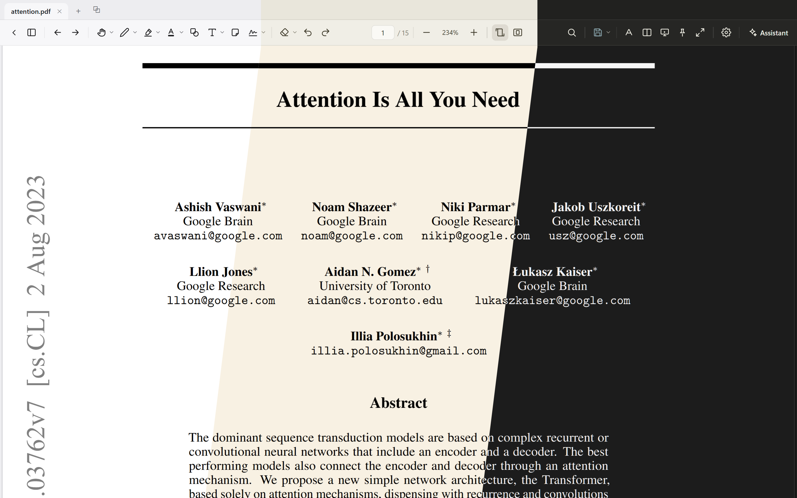
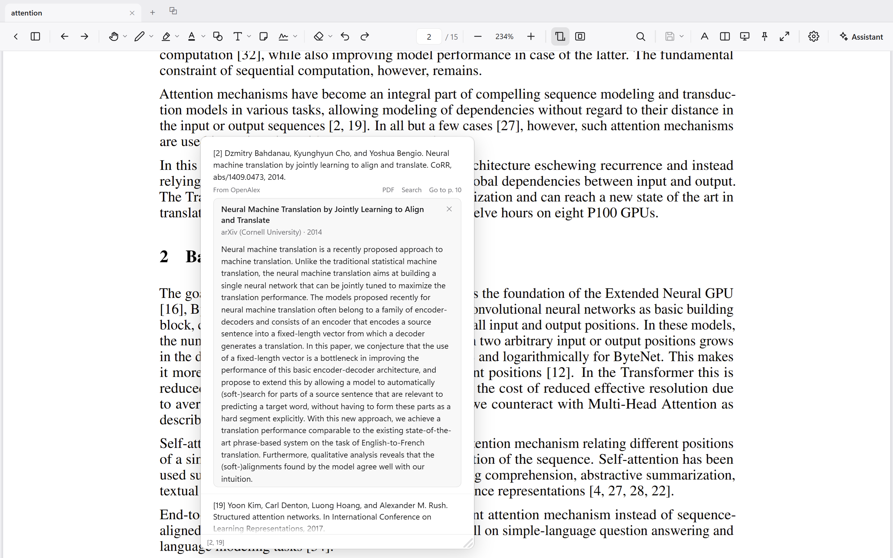
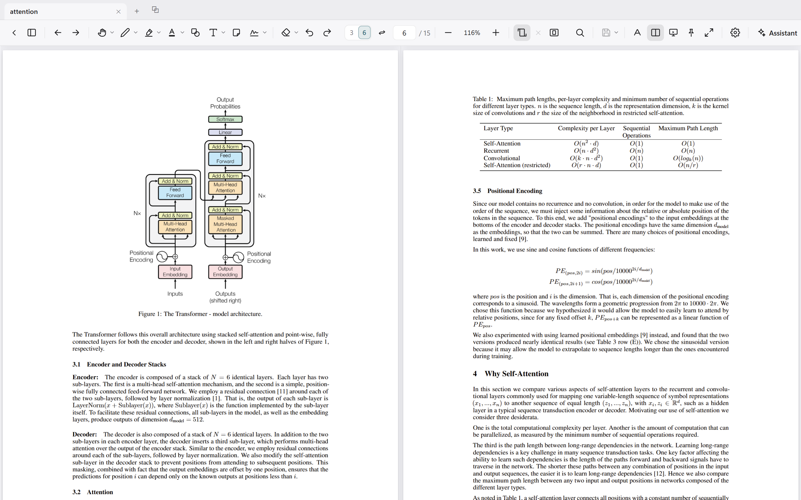
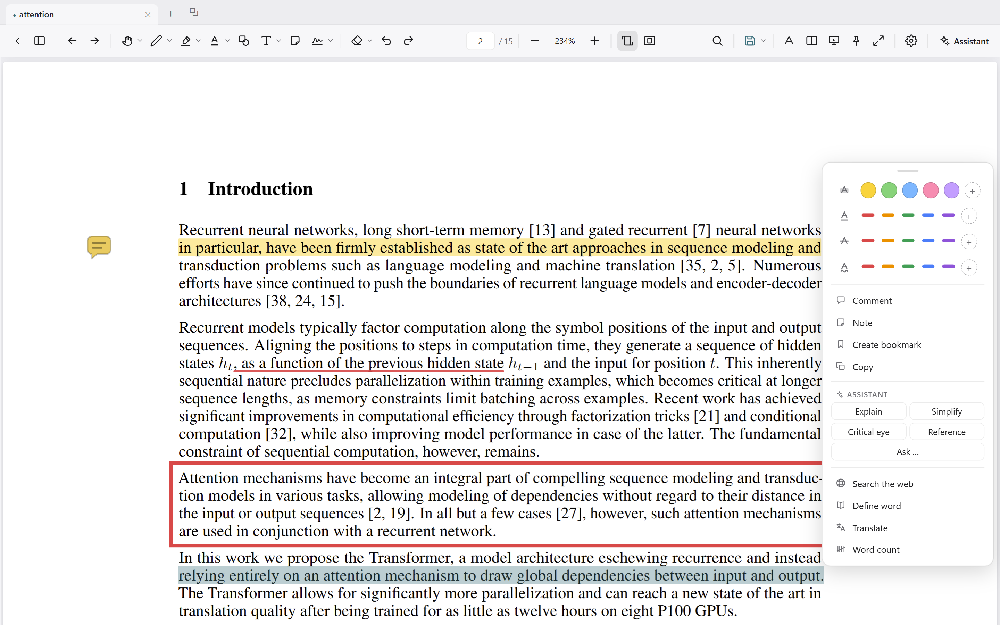
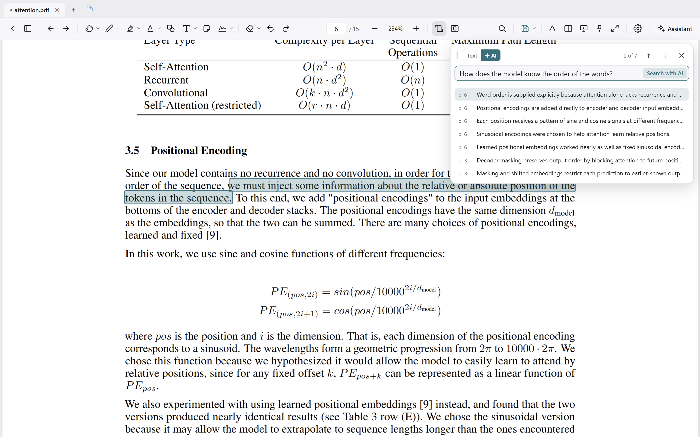
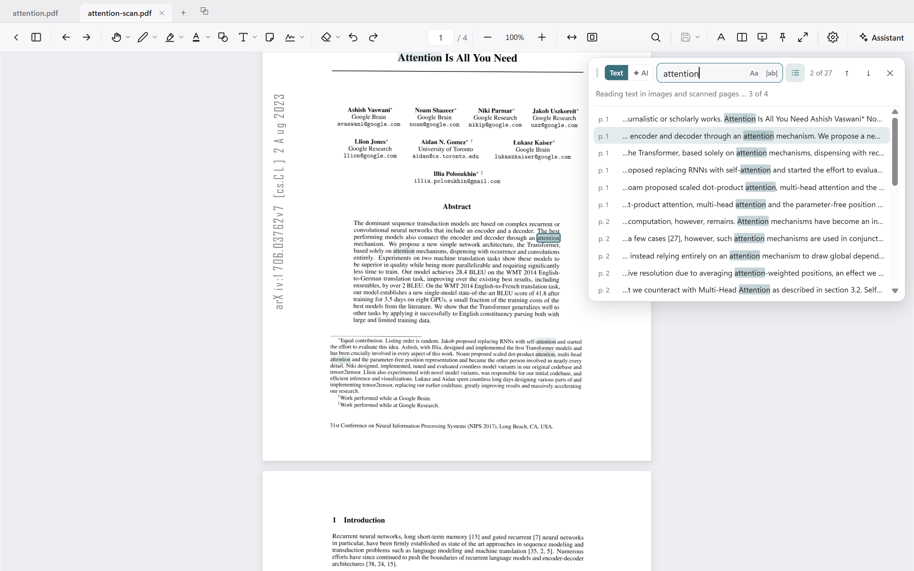
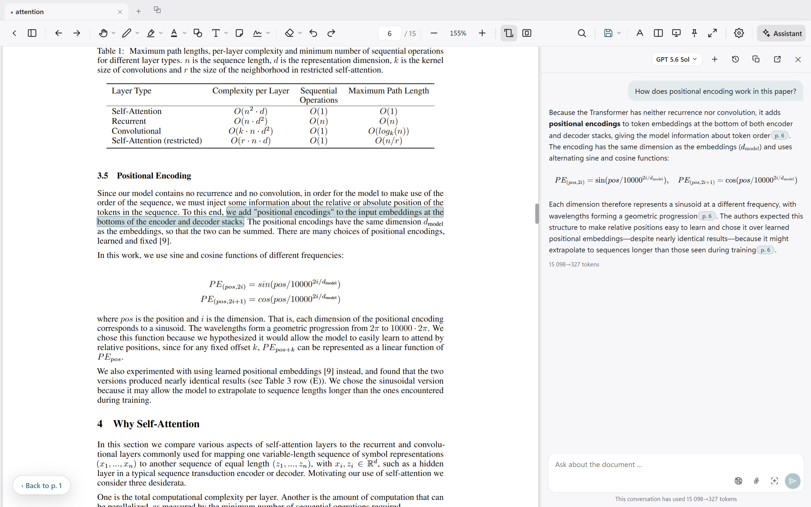
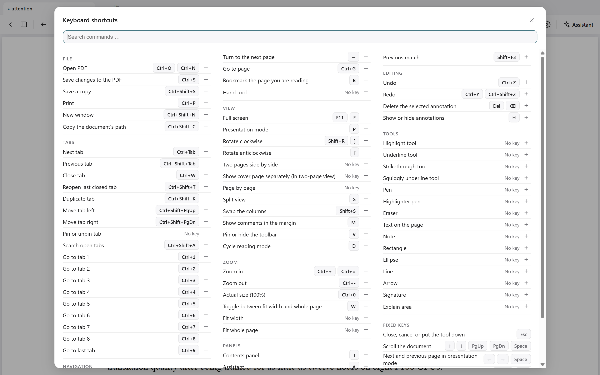

A PDF reader for research.
Read, annotate and search papers, with split view, link previews and an optional AI assistant that cites its sources.


- Free
- MIT-licensed. No account, ads or tracking.
- Local
- Reading and annotating work offline.
- Windows, macOS, Linux
- The same desktop app on all three.
- Edge and Chrome
- The same reader as a browser extension.
Reading
One slim toolbar; the rest of the window is the page. Four reading themes, tabs, and a library that reopens each file where you stopped.
Link previews
Hover a citation, figure, table or equation reference to see its target beside the text. One click fetches a cited paper's abstract.
Split view
Two columns of one document, or two documents side by side, each with its own page and zoom.
Annotation
Highlight, underline, comment, draw and type. Saved as standard PDF annotations that open in other readers.
Zotero
Works as Zotero's external reader. Copy a citation, reference or BibTeX entry from the save menu.
Search
By words, or by meaning: describe a topic and get the passages that discuss it.
Scanned pages
Text recognition runs on your computer and makes scans searchable and selectable.
Assistant
Optional. Runs on your API key, a ChatGPT plan or a local model. Each claim links to the passage it came from.
Notes in AI tools
Claude, Codex and other MCP tools can search your highlights, comments and conversations. Off by default.
Undistracted reading
One slim toolbar holds the tools you use often; contents, notes and the assistant are side panels you open when needed. Unpinned, the toolbar hides and the page fills the window.
- Four reading modes (Day, a tinted paper tone, two dark modes) and Auto, which follows the system. Night can keep figures in their original colours.
- Contents, thumbnails and bookmarks in one panel, with back and forward through your navigation history. Pages can be shown as a two-page spread, turned one at a time, or presented full-screen.
- Documents open in tabs or separate windows, and the tabs return at the next launch. Each file reopens on the page where you stopped.
Previews where you read
Rest the pointer on a citation, figure, table or equation reference, and its target opens in a small window beside the text.
- A citation shows its reference as selectable text with live DOI and web links. A bracket like «[3, 5–9]» lists every reference in it.
- One click fetches the cited paper's abstract from arXiv, Europe PMC, Crossref or OpenAlex. Roughly two in three citations find one.
- A figure, table or equation opens in a window you can scroll and resize. Click to go there, Ctrl+click to open it in the other column.

Two pages at once
The S key opens a second column, showing the same document or another one.
- Each column has its own page, zoom and rotation: a landscape table can sit upright beside the text that discusses it.
- Ctrl+click on an internal link opens its target in the other column.
- To read two papers side by side, drag a tab into the view. Each column annotates its own file.

Annotating while you read
Selecting text opens the annotation menu at the selection: highlight, underline, comment, or ask the assistant. The toolbar adds a pen, shapes, text boxes and a signature stamp; with a stylus, the pen draws while a finger scrolls.
- A notes panel lists every mark by page, with search and filters, and exports a summary to Word, Markdown or HTML.
- Comments can be shown in the margin beside the page, and exported as a print-ready copy with the comments set in a widened margin.
- Edits are held in a draft until you save. What is saved is standard PDF annotations, which open in other readers.

Works with Zotero
Set PDF Scholar as the external PDF reader in Zotero 7 or later, and attachments open here.
- A document from a Zotero library gets a Zotero section in the save menu: show the item in Zotero, or copy its citation, reference or BibTeX entry in one of eight citation styles.
- The data comes from Zotero's local API on the same computer, which you enable once in Zotero's settings.
- Zotero's “Import Annotations…” picks up the highlights and underlines saved in the file.
Search by words or by meaning
One search bar with two modes.
- By words: match case or whole word, a results list with excerpts, and every match marked on the page.
- By meaning: describe a topic in your own words and get the passages that discuss it, ranked. This mode uses the assistant's key.

Scanned pages have text
Scans, reprints and photocopied chapters are read by text recognition on your computer. Their words can then be searched, selected, copied, marked and asked about.
- The pages on screen are read first; a search reads the rest and shows the hits as they come.
- The recognised text stays on your computer, and the file is left unchanged.
- Models for English, Norwegian and Simplified Chinese. The read is not perfect: now and then two short words come out joined.

An assistant that cites its sources
Optional. Each claim in an answer carries a reference, and clicking it goes to the passage the claim came from.
- Ask about the document, a cropped figure or table, or your own highlights. A structured summary covers research question, method, data, findings and limitations.
- Conversations are kept with their document and searchable in the library. A paperclip attaches an earlier conversation, an image or a local file as context.
- Providers: OpenAI, Claude (Anthropic), Google Gemini, Azure OpenAI, OpenRouter, Grok (xAI), Mistral and Groq with your own key, or any OpenAI-compatible endpoint, including local models through Ollama or LM Studio. Signing in with ChatGPT Plus or Pro in the desktop app is an unofficial route that OpenAI allows today, under ChatGPT's terms.

Your notes in Claude, Codex and other AI tools
The desktop app can let an AI tool on your computer search what you noted across every paper: highlights with the words they mark, comments, and your assistant conversations.
- The MCP server is part of the app. Claude and Codex each have a switch under “AI tools” in the settings menu; other tools that support MCP take one config entry, which the app copies for you. How to set it up.
- Every switch is off until you turn it on. A document or a whole folder can be kept out, and a tool never sees the PDFs, images, file paths or anything from a password-protected document.
- For a tool that cannot connect, “Copy for AI” copies one document's notes and conversations as text to paste. This also works in the browser extension.
Shortcuts you can rebind
Every command is listed in one map in settings, grouped by task, with its keys beside it. Any shortcut can be rebound or reset, one key or all at once.

Local by default
Reading and annotating
Reading, annotating and saving are entirely local. The app runs without network access.
Two lookups
A document's reference from doi.org and a cited paper's abstract from free scholarly databases go online, each on a click. Only the DOI, or the one reference entry, is sent.
The assistant
Requests go directly to the provider you chose, under your key and that provider's terms, with no intermediary server. An AI action sends document content: normally the whole text, an excerpt for very long documents. A switch in settings can ask before a document is first shared with a provider, or block AI requests entirely.
AI tools
An AI tool you turn on reads your notes and conversations, and what it reads goes to that tool's provider. Its switch takes that back.
API keys are stored in the platform's own key store: DPAPI on Windows, Keychain on macOS, the system keyring on Linux. The privacy notes have the per-platform detail.
Get it
Windows
Windows 10 and 11. One installer for x64 and arm64, no admin rights needed.
Without an installer: a portable zip (x64, arm64) that you extract and run, with its settings in a folder beside the exe.
macOS
Homebrew installs and updates it too:brew install --cask emilmsh/tap/pdf-scholar
Either way the build is unsigned, so the first launch takes one Terminal command.
Linux
The deb is for Ubuntu and Debian; other distros take the AppImage.
Built from the same sources as the Windows app. I develop on Windows and have no Linux machine, so a report naming your distro and what worked is useful.
Edge and Chrome
A browser extension with the same reader, annotator and assistant. PDFs from the web open in it in a browser tab.
What each platform supports today is in the platform notes. The interface is in English, Norwegian and Simplified Chinese; the Chinese is machine-translated, and corrections are welcome as pull requests.